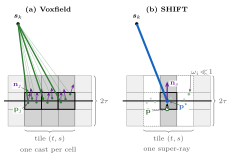

SHIFT
Surface-aware High-speed Integration For TSDFs
ACCEPTED TO
WACV 2027
IEEE/CVF Winter Conference on Applications of Computer Vision
Much of an indoor depth frame is wall, floor and ceiling, yet a TSDF integrator re-fuses every one of those pixels on every frame, long after the voxels behind them have converged. SHIFT labels each pixel flat, edge or curved from depth alone, compresses the flat pixels of each image tile into one weighted super-ray per plane, and freezes the gradient of flat voxels once their weight crosses a threshold.
METHOD
Turn planar structure into skipped work.
SHIFT extends Voxfield's non-projective TSDF with three stages per frame. Every stage is conservative: pixels that fail the planarity tests are fused exactly as in Voxfield.
Classify
Label every pixel of the organized cloud flat, edge or curved from 3D depth geometry. No RGB, no learning.
Bundle
Collapse the flat pixels of each (tile, plane) group into one super-ray snapped to the plane, carrying their summed weight.
Freeze & skip
Flat voxels past a weight threshold stop re-estimating their gradient and skip updates that already agree.
Compact ESDF
32-bit wavefront indices and a packed voxel layout shrink the ESDF layer by 8 to 28%.
Try it: classification and bundling on a depth frame
A synthetic 320×240 depth frame of a room with a box and a ball, processed live in your browser by a JavaScript port of SHIFT's RGB-D classifier and bundling step. Thresholds are the values used in the paper's RGB-D runs. Step through the stages, change the cell size P, or add sensor noise.
Noise is Gaussian depth noise as a fraction of the classifier's σ(z) model. When the noise approaches the model, cells fail the tests and the classifier falls back to curved, so those pixels are fused individually, exactly as in Voxfield.

Freezing and skipping, one voxel strip at a time
A sensor sweeps past a flat wall. Voxfield's fast integrator casts only the first ray that ends in each half-voxel cell. SHIFT casts one super-ray per image tile, which carries the tile's summed weight and updates only the voxel it crosses. The tiles move with the image, so voxels between super-rays are filled in on later frames. A flat voxel freezes its gradient once its weight reaches Wf = 5, which a single super-ray can do. From then on, a new distance within δskip = 1 cm of the stored one skips the weighted average.
freeze(Vi) ⇔ Si=FLAT ∧ Wi ≥ Wf ∧ ‖gi‖ > 0
// on a frozen voxel
|dijk − Di| < δskip ⇒ skip; else update Di, Wi (gradient stays frozen)
Illustration of the rules in Sec. 3.3: 48 pixels, tile P = 12, sensor weight 1 per pixel, 6 mm depth noise. Only one row of surface voxels is drawn; a real cast also updates the voxels along its ray inside the truncation band 2τ. Only an occupancy change during ESDF updates clears a freeze.
RESULTS
Same maps, a fraction of the integration work.
Final meshes at the representative voxel size from the paper's runs, Voxfield next to SHIFT. The two views orbit together. Drag to rotate, scroll to zoom, right-drag to pan, and lower the cut plane to look inside.
ANALYSIS
Faster at every voxel size, on every sequence.
Per-frame runtime of Voxfield and SHIFT across the voxel-size sweep (paper Table 3). Hover for values. The gain is largest on the most planar scene and smallest where planar structure is scarce.
show as table ▾
Where the savings come from
The TSDF integrator runs once per surviving ray. Bundling removes most rays before fusion, and the speedup follows how much of each frame the classifier labels flat.
Rays per frame at the representative voxel
input pixels / returns → rays after bundlingFlat: 1.7 k of the rays are super-rays that absorb the flat majority. Newer College: 645 super-rays.
Flat fraction vs. TSDF speedup
share of pixels labelled flat · TSDF speedup at the representative voxelNewer College is 70.6% flat but gains less, because a spherical range image has fewer pixels to bundle than a dense depth frame.
ESDF layer memory (MB) at the representative voxel
compact layout · ratio = SHIFT / VoxfieldTAKEAWAYS
What SHIFT shows
Planar structure is a compute budget.
On planar-dominated scenes, much of the per-frame integration work is redundant. It can be skipped outright, which complements making each operation cheaper.
Conservative by construction.
Pixels that fail the planarity tests are fused exactly as in Voxfield, and a measurement that disagrees by more than the skip tolerance still updates the distance.
One pipeline for RGB-D and LiDAR.
The classifier needs no RGB and no learned semantics. LiDAR scans become range images and follow the same path, from synthetic rooms to an outdoor quad.
CITATION
BibTeX
@article{choudhury2026shift,
title={SHIFT: Surface-aware High-speed Integration For TSDFs},
author={Choudhury, Ayaan and Tiwari, Lokender},
journal={arXiv preprint arXiv:2609.06547},
year={2026}
}